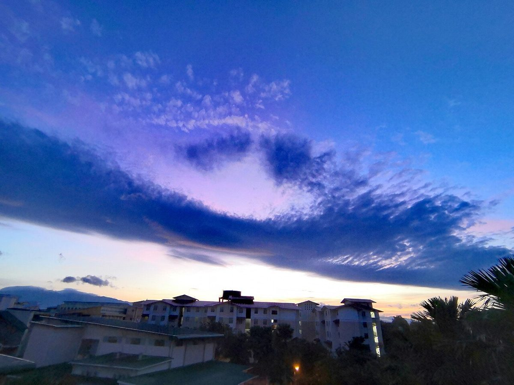

カフェ / 三重県熊野市
あ・・・お
三重県熊野市井戸町にあるカフェ「あお 喫茶」のご案内ページです。営業時間やメニューなど詳しいことは準備中。まずはInstagramをのぞいてみてください。
制作側の連想
「あ」と「お」のあいだに、い・う・え。
「あお」という屋号を見て、制作側は「あ行」の最初と最後の音が並んでいると連想しました。あ行はあ・い・う・え・おの五音です。このサイトは、あいだの「い・う・え」を、残りの三ページに当てはめています。これは制作側だけの連想で、お店の理念や店名の由来とは無関係です。「あお」が何を指すのかも、制作側では分かっていません。
あ ― 朝のイメージ
空と葉っぱの写真から。
写真は国外・撮影地不明のフリー素材のイメージです。熊野市の風景ではありません。



ご案内
確認できていること
| 所在地 | 〒519-4324 三重県熊野市井戸町806-3 |
|---|---|
| 電話 | なし |
| 営業時間 | 準備中 |
| 定休日 | 準備中 |
| ご予約 | 準備中 |
| 駐車場 | 準備中 |
| SNS | Instagram @shokudoao.kissa |